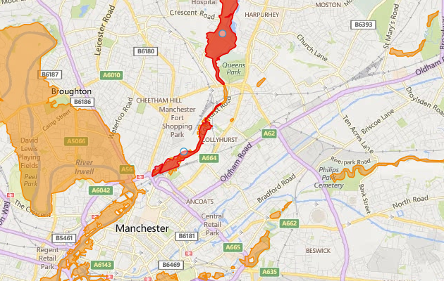

Latest river level information for Irk at Collyhurst Weir
Updated at 9:30am on Wednesday 11 January 2017
Flooding is possible here and in surrounding areas in the next 36 hours. You can check if there's a flood warning in place near you.
River levels for the last 5 days and forecast levels for the next 36 hours at this measuring station
- Highest recorded level (1.8m on 26 Dec 2016)
- Flooding of property possible in surrounding areas (1.6m)
- Flooding of low-lying land possible in surrounding areas (1.1m)
- 1.8m
- 1.6m
- 1.4m
- 1.2m
- 1.0m
- Sat, 7 Jan
- Sun, 8 Jan
- Mon, 9 Jan
- Tue, 10 Jan
- Wed, 11 Jan
Current time and level
- Recorderd level (latest 1.49m)
- Forecast level (highest 1.67m)
Which levels are most likely to indicate flooding to surrounding areas?

![]()
- © OpenStreetMap contributors.
Over 1.1m
Flooding of low-lying land such as farmland and recreational fields is possible at:
- River Irk at Cheetham Hill
- River Irk at Vale Park Industrial Estate
- River Irk at Crumpsall Hospital
- River Irk at Kendall Road
- River Irk at New Bridge
- River Irk at Rhodes
- River Irk at Little Green
- River Irk at Chadderton Fold
Over 1.6m
Flooding to property is possible at:
More information about this measuring station
View a nearby measuring station
Select a marker on the map to view measuring station.

- © OpenStreetMap contributors.